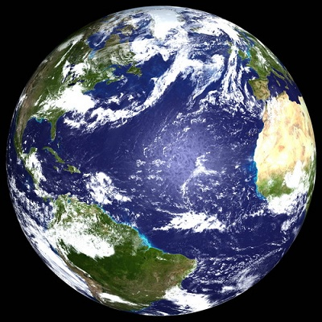
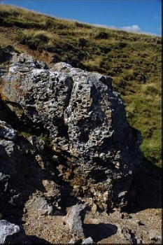
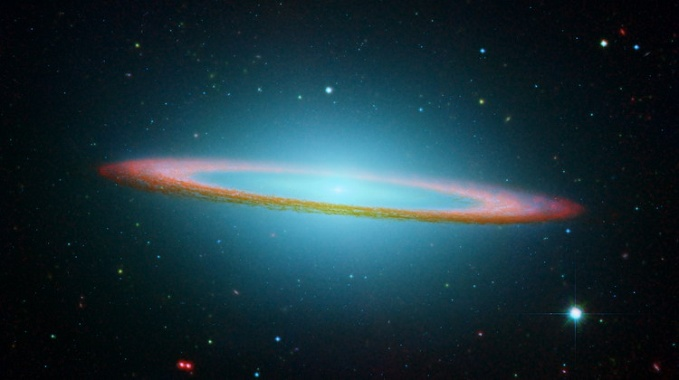
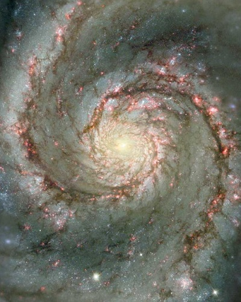

有量世界与无量世界
冯冯
佛经常说这个世界是“器世界”，也说这个娑婆世界，是“有量世界”不是“无量世界”。
器世界或有量世界；都是说事物一切都有极限。
无量世界是说没有极限的宇宙。
佛经讲的，都是符合宇宙法则的真理。今世现代的科学越昌明，越能证明佛经的真理是符合科学的，随便摭取“有量世界”“无量世界”这两个名词，就可以窥见佛理的科学化是多么深奥，多么超越时空。
现在我们居住的地球，是一个有极限的世界，我们从北极飞到南极，已经看到了地球的两个尽头，我们从三藩市向西直飞，经过远东、欧洲、越过大西洋，又回到美国来。我们可以测量得出一共多少英里，飞行了多少小时，都是有限的，可以计算得出来的，无论怎样飞来飞去，总脱不出地球的范围。这就证明了佛经讲的这是一个“器”世界。
在生命的过程来看，人生七十古来稀，就算挺长寿的，也不过是一百多岁。纵然把传说中的彭祖算在内，他也不过只活了八百岁。太古时代，很多民族以月为岁，一月为一年，某些中东民族的宗教说他们的祖先谁活了九百多岁，谁一千多岁；其实是九十多岁和一百多年，就算真的是活了一千多年；也免不了是个有极限的生命。
拿岩石来说，它的生命比人类长得多。“有情生”的人类和其他生物，生命极限短促。“无情生”的万物，像岩石、像土壤、金属，也应列为“无情生”之列，它们也有若干的生命形态和特性，虽然我们仍然称之为“化学形态”或者“化学活动”。这是因为我们仍然不甚了解它们在大自然界，在化学活动中，含有我们当前科学仍未明白的生命活动，虽然我们多数都已知道生命形态之中都有化学活动。
化学活动与生命活动（或称生物活动），是非常难以分界的。
最初，宇宙之中，存着氢、氧、氨、碳、氮……这些气体，它们活动，混合，旋转，汇聚成巨大的漩涡，产生热能，密度加重，不同的密度，不同的原子数目组合，逐渐形成了不同的原子价的元素，成为具有巨大幅射能的团团旋转星云，离心力使它们从旋转的中心向四方八面抛出去，成为多臂的旋转星云，为数亿亿兆兆，每一小组又自成一个旋转系统，无数的小旋转系统环绕着巨大的旋转系统运行，而在这运行旋转过程之中，有一些元素形成了化学活动的形态，成了生活较悠长的金属和岩石，而另一些元素形成了较短促但是较敏感活跃的活动形态，而且能够复制繁殖，即是所谓生物。

从宇宙的构成来看，生物与非生物，化学与生物，都无区别，从我们的观点来看，都有很大分别。
佛经显然是很了解这些宇宙的成住空壤过程的，故此把一切都视为生命的，而以“无情生”和“有情生”来区分。
“无情生”金属岩石，它的原子构成是具足具有若干生命的形态的，它的寿命比有情生长上几千几万倍，但是终于会达到它的极限，只是因为我们的生命太短促，而且它们的“坏”“空”过程阶段很缓慢，所以我们不能觉察。
佛陀的智慧是无限深远宏大的，告诉我们这世界一切都是有限的，佛陀也早就知道宇宙的无限无穷，佛在几千年前早就告诉我们宇宙是无限的了。现在科学家却才刚刚开始认识宇宙。
地球不过是太阳系里的一个小小行星。太阳系也不过是被误称为“银河”的星云漩系四千亿的小小漩体之一，甚至于“银河系”也仅仅是这一层宇宙当中的亿亿兆兆的类似的星云漩系之一，而这一层的宇宙之外，还有无穷无尽的层次，无穷无尽的宇宙，无限的时空。这还不过是物质的宇宙。
另外还有“非物质”的宇宙，存在于物质宇宙之中及之间。
佛陀老早已经知道了这些 。所以把宇宙称为“无量世界”。佛经是先知先觉的科学，然而找们却要太空科学进展到今阶段，才渐渐悟出佛理的科学先见。
原载万佛城《金刚菩提海》第130期：1981年03月1日
转贴来源：万佛城《金刚菩提海》